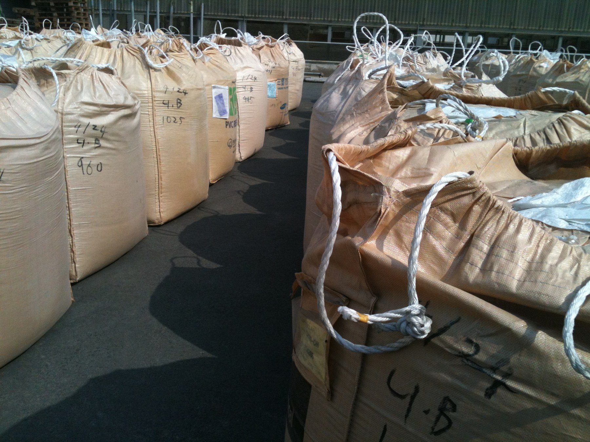
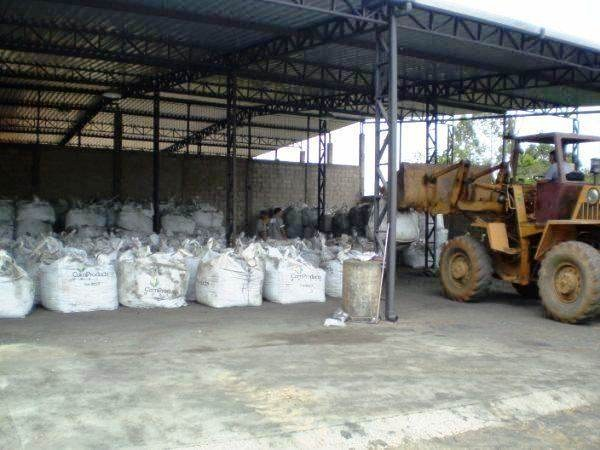
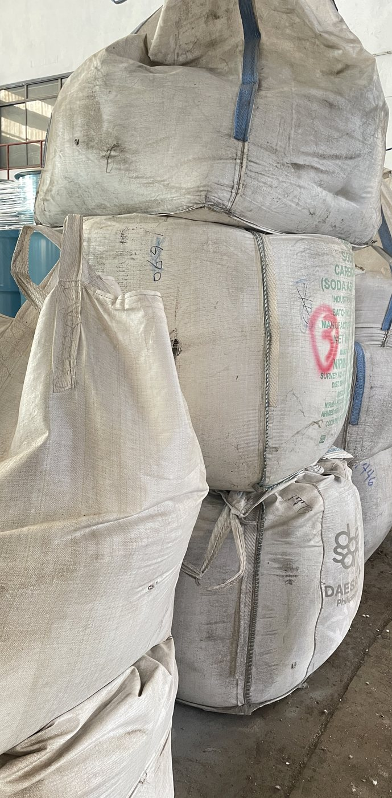
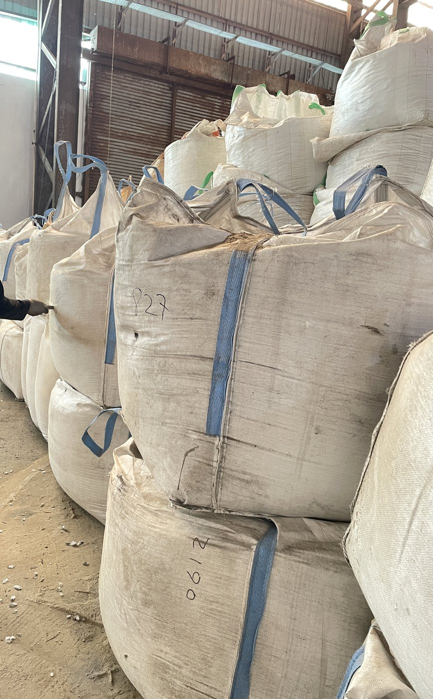
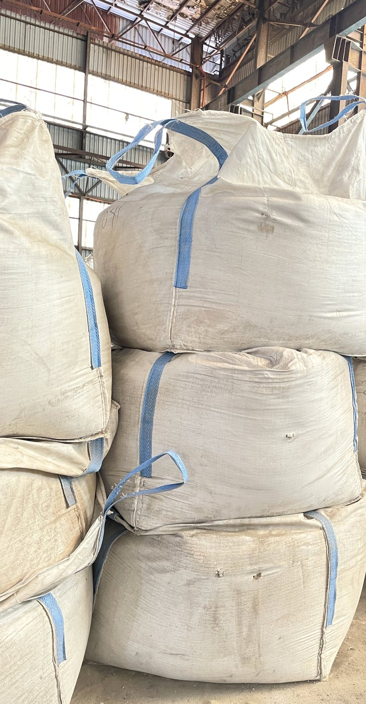
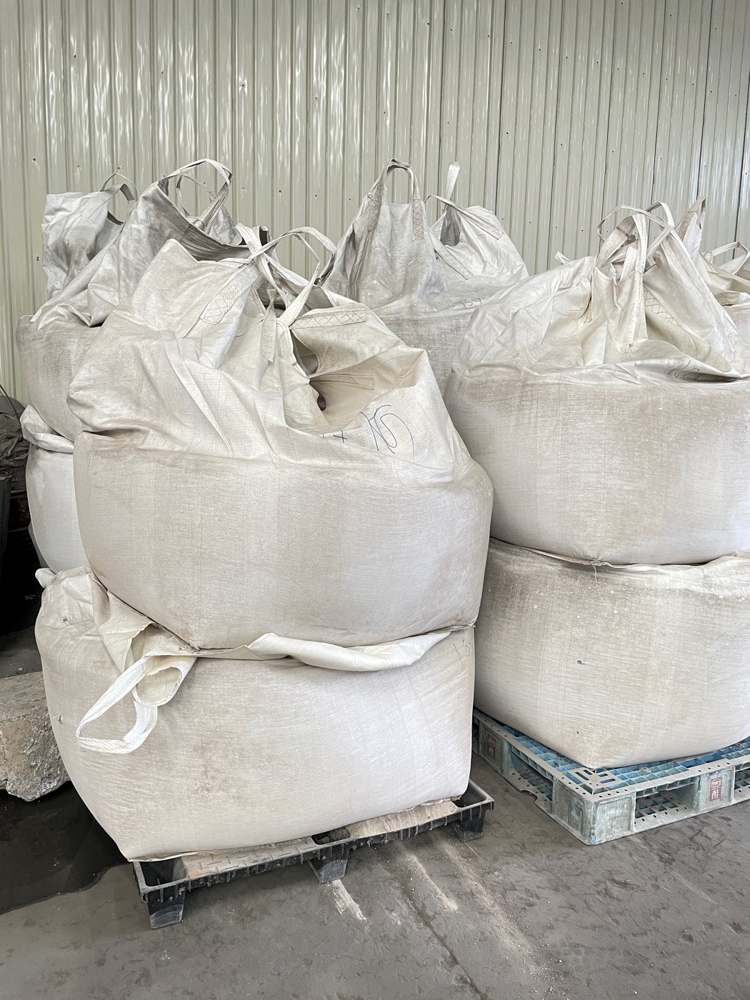

Global Sourcing
Connecting industrial suppliers, recyclers, and downstream processors for reliable international material flow.
Company
Milky Way Star is positioned as an end-user recovery and refining partner for metal-bearing industrial residues, supported by our own technical team and downstream processing capability.
We recover value from zinc ash, copper ash, nickel-bearing residues, spent catalyst, brass materials, copper concentrate, zinc ore, and other recyclable industrial by-products.
Our work begins with sourcing and material review, followed by sampling, quality classification, warehouse handling, route planning, and technical processing arrangements for suitable recovery and refining.
Through classification, preparation, processing, and refining cooperation, we help convert industrial residues into reusable metal value and refined metal resources for the global supply chain.






Connecting industrial suppliers, recyclers, and downstream processors for reliable international material flow.
Supporting inspection, classification, storage coordination, logistics, and processing cooperation.
Recovering metal value from by-products and returning secondary resources to global supply chains.